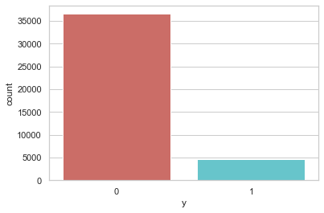
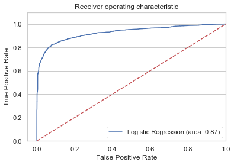

行銷活動目標客戶分析¶
import pandas as pd
import numpy as np
from sklearn import preprocessing
import matplotlib.pyplot as plt
plt.rc("font", size=14)
from sklearn.linear_model import LogisticRegression
from sklearn.model_selection import train_test_split
import seaborn as sns
sns.set(style="white")
sns.set(style="whitegrid", color_codes=True)
df=pd.read_csv('./banking.csv')
data=pd.DataFrame(df)
#print (data)
print(data.shape)
(41188, 21)
data.head()
| age | job | marital | education | default | housing | loan | contact | month | day_of_week | ... | campaign | pdays | previous | poutcome | emp_var_rate | cons_price_idx | cons_conf_idx | euribor3m | nr_employed | y | |
|---|---|---|---|---|---|---|---|---|---|---|---|---|---|---|---|---|---|---|---|---|---|
| 0 | 44 | blue-collar | married | basic.4y | unknown | yes | no | cellular | aug | thu | ... | 1 | 999 | 0 | nonexistent | 1.4 | 93.444 | -36.1 | 4.963 | 5228.1 | 0 |
| 1 | 53 | technician | married | unknown | no | no | no | cellular | nov | fri | ... | 1 | 999 | 0 | nonexistent | -0.1 | 93.200 | -42.0 | 4.021 | 5195.8 | 0 |
| 2 | 28 | management | single | university.degree | no | yes | no | cellular | jun | thu | ... | 3 | 6 | 2 | success | -1.7 | 94.055 | -39.8 | 0.729 | 4991.6 | 1 |
| 3 | 39 | services | married | high.school | no | no | no | cellular | apr | fri | ... | 2 | 999 | 0 | nonexistent | -1.8 | 93.075 | -47.1 | 1.405 | 5099.1 | 0 |
| 4 | 55 | retired | married | basic.4y | no | yes | no | cellular | aug | fri | ... | 1 | 3 | 1 | success | -2.9 | 92.201 | -31.4 | 0.869 | 5076.2 | 1 |
5 rows × 21 columns
data.isnull().sum()
age 0
job 0
marital 0
education 0
default 0
housing 0
loan 0
contact 0
month 0
day_of_week 0
duration 0
campaign 0
pdays 0
previous 0
poutcome 0
emp_var_rate 0
cons_price_idx 0
cons_conf_idx 0
euribor3m 0
nr_employed 0
y 0
dtype: int64
data.isnull().sum().sum()
0
data['education'].unique()
array(['basic.4y', 'unknown', 'university.degree', 'high.school',
'basic.9y', 'professional.course', 'basic.6y', 'illiterate'],
dtype=object)
data['education'].value_counts()
university.degree 12168
high.school 9515
basic.9y 6045
professional.course 5243
basic.4y 4176
basic.6y 2292
unknown 1731
illiterate 18
Name: education, dtype: int64
#將 basic 4y,6y,9y 群組 統稱 basic
data['education']=np.where(data['education']=='basic.9y', 'Basic', data['education'])
data['education']=np.where(data['education']=='basic 6y', 'Basic', data['education'])
data['education']=np.where(data['education']=='basic 4y', 'Basic', data['education'])
data['education'].unique()
array(['basic.4y', 'unknown', 'university.degree', 'high.school', 'Basic',
'professional.course', 'basic.6y', 'illiterate'], dtype=object)
# Data exploration
#y=1 (yes) y=0(no)
data['y'].value_counts()
0 36548
1 4640
Name: y, dtype: int64
sns.countplot(x='y', data=data, palette='hls')
plt.show()

No_sub=len(data[data['y']==0])
yes_sub=len(data[data['y']==1])
percent_No_sub=No_sub/(yes_sub+No_sub)*100
print ('percent of no subscription:', round(percent_No_sub,2))
percent_yes_sub=yes_sub/(yes_sub+No_sub)*100
print ('percent of yes subscription:', round(percent_yes_sub,2))
percent of no subscription: 88.73
percent of yes subscription: 11.27
data.groupby('y').mean()
| age | duration | campaign | pdays | previous | emp_var_rate | cons_price_idx | cons_conf_idx | euribor3m | nr_employed | |
|---|---|---|---|---|---|---|---|---|---|---|
| y | ||||||||||
| 0 | 39.911185 | 220.844807 | 2.633085 | 984.113878 | 0.132374 | 0.248875 | 93.603757 | -40.593097 | 3.811491 | 5176.166600 |
| 1 | 40.913147 | 553.191164 | 2.051724 | 792.035560 | 0.492672 | -1.233448 | 93.354386 | -39.789784 | 2.123135 | 5095.115991 |
data.groupby('job').mean()
| age | duration | campaign | pdays | previous | emp_var_rate | cons_price_idx | cons_conf_idx | euribor3m | nr_employed | y | |
|---|---|---|---|---|---|---|---|---|---|---|---|
| job | |||||||||||
| admin. | 38.187296 | 254.312128 | 2.623489 | 954.319229 | 0.189023 | 0.015563 | 93.534054 | -40.245433 | 3.550274 | 5164.125350 | 0.129726 |
| blue-collar | 39.555760 | 264.542360 | 2.558461 | 985.160363 | 0.122542 | 0.248995 | 93.656656 | -41.375816 | 3.771996 | 5175.615150 | 0.068943 |
| entrepreneur | 41.723214 | 263.267857 | 2.535714 | 981.267170 | 0.138736 | 0.158723 | 93.605372 | -41.283654 | 3.791120 | 5176.313530 | 0.085165 |
| housemaid | 45.500000 | 250.454717 | 2.639623 | 960.579245 | 0.137736 | 0.433396 | 93.676576 | -39.495283 | 4.009645 | 5179.529623 | 0.100000 |
| management | 42.362859 | 257.058140 | 2.476060 | 962.647059 | 0.185021 | -0.012688 | 93.522755 | -40.489466 | 3.611316 | 5166.650513 | 0.112175 |
| retired | 62.027326 | 273.712209 | 2.476744 | 897.936047 | 0.327326 | -0.698314 | 93.430786 | -38.573081 | 2.770066 | 5122.262151 | 0.252326 |
| self-employed | 39.949331 | 264.142153 | 2.660802 | 976.621393 | 0.143561 | 0.094159 | 93.559982 | -40.488107 | 3.689376 | 5170.674384 | 0.104856 |
| services | 37.926430 | 258.398085 | 2.587805 | 979.974049 | 0.154951 | 0.175359 | 93.634659 | -41.290048 | 3.699187 | 5171.600126 | 0.081381 |
| student | 25.894857 | 283.683429 | 2.104000 | 840.217143 | 0.524571 | -1.408000 | 93.331613 | -40.187543 | 1.884224 | 5085.939086 | 0.314286 |
| technician | 38.507638 | 250.232241 | 2.577339 | 964.408127 | 0.153789 | 0.274566 | 93.561471 | -39.927569 | 3.820401 | 5175.648391 | 0.108260 |
| unemployed | 39.733728 | 249.451677 | 2.564103 | 935.316568 | 0.199211 | -0.111736 | 93.563781 | -40.007594 | 3.466583 | 5157.156509 | 0.142012 |
| unknown | 45.563636 | 239.675758 | 2.648485 | 938.727273 | 0.154545 | 0.357879 | 93.718942 | -38.797879 | 3.949033 | 5172.931818 | 0.112121 |
data.groupby('marital').mean()
| age | duration | campaign | pdays | previous | emp_var_rate | cons_price_idx | cons_conf_idx | euribor3m | nr_employed | y | |
|---|---|---|---|---|---|---|---|---|---|---|---|
| marital | |||||||||||
| divorced | 44.899393 | 253.790330 | 2.61340 | 968.639853 | 0.168690 | 0.163985 | 93.606563 | -40.707069 | 3.715603 | 5170.878643 | 0.103209 |
| married | 42.307165 | 257.438623 | 2.57281 | 967.247673 | 0.155608 | 0.183625 | 93.597367 | -40.270659 | 3.745832 | 5171.848772 | 0.101573 |
| single | 33.158714 | 261.524378 | 2.53380 | 949.909578 | 0.211359 | -0.167989 | 93.517300 | -40.918698 | 3.317447 | 5155.199265 | 0.140041 |
| unknown | 40.275000 | 312.725000 | 3.18750 | 937.100000 | 0.275000 | -0.221250 | 93.471250 | -40.820000 | 3.313038 | 5157.393750 | 0.150000 |
data.groupby('education').mean()
| age | duration | campaign | pdays | previous | emp_var_rate | cons_price_idx | cons_conf_idx | euribor3m | nr_employed | y | |
|---|---|---|---|---|---|---|---|---|---|---|---|
| education | |||||||||||
| Basic | 39.061208 | 261.291811 | 2.532341 | 979.133168 | 0.141439 | 0.159239 | 93.623399 | -41.326749 | 3.697963 | 5172.294012 | 0.078246 |
| basic.4y | 47.596504 | 264.827826 | 2.600575 | 965.704981 | 0.147031 | 0.215924 | 93.658309 | -40.239871 | 3.751768 | 5170.124880 | 0.102490 |
| basic.6y | 40.448953 | 264.414485 | 2.556283 | 980.368237 | 0.129145 | 0.231152 | 93.650062 | -41.127880 | 3.772942 | 5174.718063 | 0.082024 |
| high.school | 37.998213 | 260.886810 | 2.568576 | 964.358382 | 0.185917 | 0.032937 | 93.584857 | -40.940641 | 3.556157 | 5164.994735 | 0.108355 |
| illiterate | 48.500000 | 276.777778 | 2.277778 | 943.833333 | 0.111111 | -0.133333 | 93.317333 | -39.950000 | 3.516556 | 5171.777778 | 0.222222 |
| professional.course | 40.080107 | 252.533855 | 2.586115 | 960.765974 | 0.163075 | 0.173012 | 93.569864 | -40.124108 | 3.710457 | 5170.155979 | 0.113485 |
| university.degree | 38.879191 | 253.223373 | 2.563527 | 951.807692 | 0.192390 | -0.028090 | 93.493466 | -39.975805 | 3.529663 | 5163.226298 | 0.137245 |
| unknown | 43.481225 | 262.390526 | 2.596187 | 942.830734 | 0.226459 | 0.059099 | 93.658615 | -39.877816 | 3.571098 | 5159.549509 | 0.145003 |
# Visualization
%matplotlib inline
pd.crosstab(data.job,data.y).plot(kind='bar')
plt.title('purchase frequency for Job')
plt.xlabel('job')
plt.ylabel('Frequency of purchase')
Text(0, 0.5, 'Frequency of purchase')
pd.crosstab(data.job, columns=[data.month, data.y])
| month | apr | aug | dec | jul | jun | mar | may | nov | oct | sep | ||||||||||
|---|---|---|---|---|---|---|---|---|---|---|---|---|---|---|---|---|---|---|---|---|
| y | 0 | 1 | 0 | 1 | 0 | 1 | 0 | 1 | 0 | 1 | 0 | 1 | 0 | 1 | 0 | 1 | 0 | 1 | 0 | 1 |
| job | ||||||||||||||||||||
| admin. | 469 | 175 | 1826 | 213 | 28 | 22 | 1623 | 192 | 1080 | 158 | 80 | 89 | 2808 | 211 | 965 | 120 | 109 | 88 | 82 | 84 |
| blue-collar | 512 | 53 | 534 | 48 | 7 | 5 | 1669 | 120 | 1289 | 96 | 23 | 27 | 3974 | 225 | 560 | 42 | 35 | 16 | 13 | 6 |
| entrepreneur | 94 | 15 | 61 | 13 | 0 | 1 | 256 | 17 | 198 | 19 | 1 | 1 | 452 | 32 | 254 | 15 | 10 | 5 | 6 | 6 |
| housemaid | 28 | 19 | 193 | 15 | 5 | 5 | 226 | 13 | 125 | 11 | 2 | 4 | 282 | 14 | 74 | 13 | 11 | 8 | 8 | 4 |
| management | 165 | 30 | 317 | 40 | 7 | 5 | 359 | 40 | 309 | 43 | 25 | 17 | 856 | 53 | 508 | 53 | 25 | 26 | 25 | 21 |
| retired | 93 | 67 | 262 | 80 | 16 | 17 | 220 | 51 | 146 | 27 | 33 | 31 | 299 | 30 | 89 | 47 | 76 | 50 | 52 | 34 |
| self-employed | 75 | 22 | 196 | 16 | 2 | 4 | 199 | 21 | 182 | 22 | 13 | 12 | 394 | 24 | 184 | 14 | 15 | 6 | 12 | 8 |
| services | 249 | 32 | 249 | 31 | 0 | 2 | 719 | 71 | 508 | 34 | 15 | 10 | 1565 | 101 | 306 | 15 | 16 | 17 | 19 | 10 |
| student | 69 | 35 | 72 | 44 | 14 | 6 | 83 | 22 | 68 | 33 | 16 | 25 | 189 | 43 | 36 | 18 | 26 | 27 | 27 | 22 |
| technician | 295 | 73 | 1653 | 134 | 8 | 16 | 974 | 82 | 655 | 83 | 53 | 49 | 1706 | 127 | 563 | 64 | 58 | 58 | 48 | 44 |
| unemployed | 37 | 16 | 105 | 16 | 5 | 5 | 152 | 13 | 147 | 23 | 7 | 11 | 241 | 23 | 142 | 12 | 17 | 11 | 17 | 14 |
| unknown | 7 | 2 | 55 | 5 | 1 | 1 | 45 | 7 | 52 | 10 | 2 | 0 | 117 | 3 | 4 | 3 | 5 | 3 | 5 | 3 |
table=pd.crosstab(data.marital,data.y)
table.div(table.sum(1).astype(float), axis=0).plot(kind='bar', stacked=True)
plt.title('Material status vs Purchase')
plt.xlabel('Material status')
plt.ylabel('Proportion of Custmers')
Text(0, 0.5, 'Proportion of Custmers')
#education seems a good predictor of the outcome variable
table=pd.crosstab(data.education,data.y)
table.div(table.sum(1).astype(float),axis=0).plot(kind='bar',stacked=True)
plt.title('Education vs Purchase')
plt.xlabel('Education')
plt.ylabel('Proportion of Customers')
Text(0, 0.5, 'Proportion of Customers')
# day of week may not be a good predictor
pd.crosstab(data.day_of_week, data.y).plot(kind='bar')
plt.title('purchase frequency for day of week')
plt.xlabel('Day of week')
plt.ylabel('Frequency of purchase')
Text(0, 0.5, 'Frequency of purchase')
# month might be a good predictor
pd.crosstab(data.month, data.y).plot(kind='bar')
plt.title('Purchase Frequency for Month')
plt.xlabel('Month')
plt.ylabel('Frequency of Purchase')
Text(0, 0.5, 'Frequency of Purchase')
data.age.hist()
plt.title('Histogram of age')
plt.xlabel('Age')
plt.ylabel('Frequency')
Text(0, 0.5, 'Frequency')
pd.crosstab(data.poutcome,data.y).plot(kind='bar')
plt.title('Purchase Frequency for Poutcome')
plt.xlabel('Poutcome')
plt.ylabel('Frequency of Purchase')
Text(0, 0.5, 'Frequency of Purchase')
# create dummy variables
cat_vars=['job', 'marital', 'education','default', 'housing','loan','contact','month','day_of_week','poutcome']
for var in cat_vars:
cat_list='var'+'_'+var
cat_list=pd.get_dummies(data[var], prefix=var)
data1=data.join(cat_list)
data=data1
cat_vars=['job','marital','education','default','housing','loan','contact','month','day_of_week','poutcome']
data_vars=data.columns.values.tolist()
to_keep=[i for i in data_vars if i not in cat_vars]
data_final=data[to_keep]
data_final.columns.values
array(['age', 'duration', 'campaign', 'pdays', 'previous', 'emp_var_rate',
'cons_price_idx', 'cons_conf_idx', 'euribor3m', 'nr_employed', 'y',
'job_admin.', 'job_blue-collar', 'job_entrepreneur',
'job_housemaid', 'job_management', 'job_retired',
'job_self-employed', 'job_services', 'job_student',
'job_technician', 'job_unemployed', 'job_unknown',
'marital_divorced', 'marital_married', 'marital_single',
'marital_unknown', 'education_Basic', 'education_basic.4y',
'education_basic.6y', 'education_high.school',
'education_illiterate', 'education_professional.course',
'education_university.degree', 'education_unknown', 'default_no',
'default_unknown', 'default_yes', 'housing_no', 'housing_unknown',
'housing_yes', 'loan_no', 'loan_unknown', 'loan_yes',
'contact_cellular', 'contact_telephone', 'month_apr', 'month_aug',
'month_dec', 'month_jul', 'month_jun', 'month_mar', 'month_may',
'month_nov', 'month_oct', 'month_sep', 'day_of_week_fri',
'day_of_week_mon', 'day_of_week_thu', 'day_of_week_tue',
'day_of_week_wed', 'poutcome_failure', 'poutcome_nonexistent',
'poutcome_success'], dtype=object)
len(data_final.columns)
64
# over-sampling using SMOTE
X=data_final.loc[:, data_final.columns !='y']
y=data_final.loc[:, data_final.columns == 'y']
from imblearn.over_sampling import SMOTE
os=SMOTE(random_state=0)
X_train, X_test, y_train, y_test= train_test_split(X, y, test_size=.3, random_state=0)
columns = X_train.columns
os_data_X, os_data_y= os.fit_sample(X_train, y_train)
os_data_X= pd.DataFrame(data=os_data_X, columns=columns)
os_data_y=pd.DataFrame(data=os_data_y, columns=['y'])
#can check the numbers of our data
print('length of oversampled data is', len(os_data_X))
print('Number of no subscription in oversampled data', len(os_data_y[os_data_y['y']==0]))
print("Number of subscription",len(os_data_y[os_data_y['y']==1]))
print("Proportion of no subscription data in oversampled data is ",len(os_data_y[os_data_y['y']==0])/len(os_data_X))
print("Proportion of subscription data in oversampled data is ",len(os_data_y[os_data_y['y']==1])/len(os_data_X))
length of oversampled data is 51134
Number of no subscription in oversampled data 25567
Number of subscription 25567
Proportion of no subscription data in oversampled data is 0.5
Proportion of subscription data in oversampled data is 0.5
# Recursive feature elimination
data_final_vars= data_final.columns.values.tolist()
y=['y']
X=[i for i in data_final_vars if i not in y]
from sklearn import datasets
from sklearn.feature_selection import RFE
from sklearn.linear_model import LogisticRegression
import warnings
logreg =LogisticRegression()
rfe=RFE(logreg, 20)
rfe=rfe.fit(os_data_X, os_data_y.values.ravel())
warnings.filterwarnings("ignore")
print(rfe.support_)
print(rfe.ranking_)
C:\ProgramData\Anaconda3\lib\site-packages\sklearn\utils\validation.py:70: FutureWarning: Pass n_features_to_select=20 as keyword args. From version 0.25 passing these as positional arguments will result in an error
FutureWarning)
C:\ProgramData\Anaconda3\lib\site-packages\sklearn\linear_model\_logistic.py:764: ConvergenceWarning: lbfgs failed to converge (status=1):
STOP: TOTAL NO. of ITERATIONS REACHED LIMIT.
Increase the number of iterations (max_iter) or scale the data as shown in:
https://scikit-learn.org/stable/modules/preprocessing.html
Please also refer to the documentation for alternative solver options:
https://scikit-learn.org/stable/modules/linear_model.html#logistic-regression
extra_warning_msg=_LOGISTIC_SOLVER_CONVERGENCE_MSG)
C:\ProgramData\Anaconda3\lib\site-packages\sklearn\linear_model\_logistic.py:764: ConvergenceWarning: lbfgs failed to converge (status=1):
STOP: TOTAL NO. of ITERATIONS REACHED LIMIT.
Increase the number of iterations (max_iter) or scale the data as shown in:
https://scikit-learn.org/stable/modules/preprocessing.html
Please also refer to the documentation for alternative solver options:
https://scikit-learn.org/stable/modules/linear_model.html#logistic-regression
extra_warning_msg=_LOGISTIC_SOLVER_CONVERGENCE_MSG)
C:\ProgramData\Anaconda3\lib\site-packages\sklearn\linear_model\_logistic.py:764: ConvergenceWarning: lbfgs failed to converge (status=1):
STOP: TOTAL NO. of ITERATIONS REACHED LIMIT.
Increase the number of iterations (max_iter) or scale the data as shown in:
https://scikit-learn.org/stable/modules/preprocessing.html
Please also refer to the documentation for alternative solver options:
https://scikit-learn.org/stable/modules/linear_model.html#logistic-regression
extra_warning_msg=_LOGISTIC_SOLVER_CONVERGENCE_MSG)
C:\ProgramData\Anaconda3\lib\site-packages\sklearn\linear_model\_logistic.py:764: ConvergenceWarning: lbfgs failed to converge (status=1):
STOP: TOTAL NO. of ITERATIONS REACHED LIMIT.
Increase the number of iterations (max_iter) or scale the data as shown in:
https://scikit-learn.org/stable/modules/preprocessing.html
Please also refer to the documentation for alternative solver options:
https://scikit-learn.org/stable/modules/linear_model.html#logistic-regression
extra_warning_msg=_LOGISTIC_SOLVER_CONVERGENCE_MSG)
C:\ProgramData\Anaconda3\lib\site-packages\sklearn\linear_model\_logistic.py:764: ConvergenceWarning: lbfgs failed to converge (status=1):
STOP: TOTAL NO. of ITERATIONS REACHED LIMIT.
Increase the number of iterations (max_iter) or scale the data as shown in:
https://scikit-learn.org/stable/modules/preprocessing.html
Please also refer to the documentation for alternative solver options:
https://scikit-learn.org/stable/modules/linear_model.html#logistic-regression
extra_warning_msg=_LOGISTIC_SOLVER_CONVERGENCE_MSG)
C:\ProgramData\Anaconda3\lib\site-packages\sklearn\linear_model\_logistic.py:764: ConvergenceWarning: lbfgs failed to converge (status=1):
STOP: TOTAL NO. of ITERATIONS REACHED LIMIT.
Increase the number of iterations (max_iter) or scale the data as shown in:
https://scikit-learn.org/stable/modules/preprocessing.html
Please also refer to the documentation for alternative solver options:
https://scikit-learn.org/stable/modules/linear_model.html#logistic-regression
extra_warning_msg=_LOGISTIC_SOLVER_CONVERGENCE_MSG)
C:\ProgramData\Anaconda3\lib\site-packages\sklearn\linear_model\_logistic.py:764: ConvergenceWarning: lbfgs failed to converge (status=1):
STOP: TOTAL NO. of ITERATIONS REACHED LIMIT.
Increase the number of iterations (max_iter) or scale the data as shown in:
https://scikit-learn.org/stable/modules/preprocessing.html
Please also refer to the documentation for alternative solver options:
https://scikit-learn.org/stable/modules/linear_model.html#logistic-regression
extra_warning_msg=_LOGISTIC_SOLVER_CONVERGENCE_MSG)
C:\ProgramData\Anaconda3\lib\site-packages\sklearn\linear_model\_logistic.py:764: ConvergenceWarning: lbfgs failed to converge (status=1):
STOP: TOTAL NO. of ITERATIONS REACHED LIMIT.
Increase the number of iterations (max_iter) or scale the data as shown in:
https://scikit-learn.org/stable/modules/preprocessing.html
Please also refer to the documentation for alternative solver options:
https://scikit-learn.org/stable/modules/linear_model.html#logistic-regression
extra_warning_msg=_LOGISTIC_SOLVER_CONVERGENCE_MSG)
C:\ProgramData\Anaconda3\lib\site-packages\sklearn\linear_model\_logistic.py:764: ConvergenceWarning: lbfgs failed to converge (status=1):
STOP: TOTAL NO. of ITERATIONS REACHED LIMIT.
Increase the number of iterations (max_iter) or scale the data as shown in:
https://scikit-learn.org/stable/modules/preprocessing.html
Please also refer to the documentation for alternative solver options:
https://scikit-learn.org/stable/modules/linear_model.html#logistic-regression
extra_warning_msg=_LOGISTIC_SOLVER_CONVERGENCE_MSG)
C:\ProgramData\Anaconda3\lib\site-packages\sklearn\linear_model\_logistic.py:764: ConvergenceWarning: lbfgs failed to converge (status=1):
STOP: TOTAL NO. of ITERATIONS REACHED LIMIT.
Increase the number of iterations (max_iter) or scale the data as shown in:
https://scikit-learn.org/stable/modules/preprocessing.html
Please also refer to the documentation for alternative solver options:
https://scikit-learn.org/stable/modules/linear_model.html#logistic-regression
extra_warning_msg=_LOGISTIC_SOLVER_CONVERGENCE_MSG)
C:\ProgramData\Anaconda3\lib\site-packages\sklearn\linear_model\_logistic.py:764: ConvergenceWarning: lbfgs failed to converge (status=1):
STOP: TOTAL NO. of ITERATIONS REACHED LIMIT.
Increase the number of iterations (max_iter) or scale the data as shown in:
https://scikit-learn.org/stable/modules/preprocessing.html
Please also refer to the documentation for alternative solver options:
https://scikit-learn.org/stable/modules/linear_model.html#logistic-regression
extra_warning_msg=_LOGISTIC_SOLVER_CONVERGENCE_MSG)
C:\ProgramData\Anaconda3\lib\site-packages\sklearn\linear_model\_logistic.py:764: ConvergenceWarning: lbfgs failed to converge (status=1):
STOP: TOTAL NO. of ITERATIONS REACHED LIMIT.
Increase the number of iterations (max_iter) or scale the data as shown in:
https://scikit-learn.org/stable/modules/preprocessing.html
Please also refer to the documentation for alternative solver options:
https://scikit-learn.org/stable/modules/linear_model.html#logistic-regression
extra_warning_msg=_LOGISTIC_SOLVER_CONVERGENCE_MSG)
C:\ProgramData\Anaconda3\lib\site-packages\sklearn\linear_model\_logistic.py:764: ConvergenceWarning: lbfgs failed to converge (status=1):
STOP: TOTAL NO. of ITERATIONS REACHED LIMIT.
Increase the number of iterations (max_iter) or scale the data as shown in:
https://scikit-learn.org/stable/modules/preprocessing.html
Please also refer to the documentation for alternative solver options:
https://scikit-learn.org/stable/modules/linear_model.html#logistic-regression
extra_warning_msg=_LOGISTIC_SOLVER_CONVERGENCE_MSG)
C:\ProgramData\Anaconda3\lib\site-packages\sklearn\linear_model\_logistic.py:764: ConvergenceWarning: lbfgs failed to converge (status=1):
STOP: TOTAL NO. of ITERATIONS REACHED LIMIT.
Increase the number of iterations (max_iter) or scale the data as shown in:
https://scikit-learn.org/stable/modules/preprocessing.html
Please also refer to the documentation for alternative solver options:
https://scikit-learn.org/stable/modules/linear_model.html#logistic-regression
extra_warning_msg=_LOGISTIC_SOLVER_CONVERGENCE_MSG)
C:\ProgramData\Anaconda3\lib\site-packages\sklearn\linear_model\_logistic.py:764: ConvergenceWarning: lbfgs failed to converge (status=1):
STOP: TOTAL NO. of ITERATIONS REACHED LIMIT.
Increase the number of iterations (max_iter) or scale the data as shown in:
https://scikit-learn.org/stable/modules/preprocessing.html
Please also refer to the documentation for alternative solver options:
https://scikit-learn.org/stable/modules/linear_model.html#logistic-regression
extra_warning_msg=_LOGISTIC_SOLVER_CONVERGENCE_MSG)
C:\ProgramData\Anaconda3\lib\site-packages\sklearn\linear_model\_logistic.py:764: ConvergenceWarning: lbfgs failed to converge (status=1):
STOP: TOTAL NO. of ITERATIONS REACHED LIMIT.
Increase the number of iterations (max_iter) or scale the data as shown in:
https://scikit-learn.org/stable/modules/preprocessing.html
Please also refer to the documentation for alternative solver options:
https://scikit-learn.org/stable/modules/linear_model.html#logistic-regression
extra_warning_msg=_LOGISTIC_SOLVER_CONVERGENCE_MSG)
C:\ProgramData\Anaconda3\lib\site-packages\sklearn\linear_model\_logistic.py:764: ConvergenceWarning: lbfgs failed to converge (status=1):
STOP: TOTAL NO. of ITERATIONS REACHED LIMIT.
Increase the number of iterations (max_iter) or scale the data as shown in:
https://scikit-learn.org/stable/modules/preprocessing.html
Please also refer to the documentation for alternative solver options:
https://scikit-learn.org/stable/modules/linear_model.html#logistic-regression
extra_warning_msg=_LOGISTIC_SOLVER_CONVERGENCE_MSG)
C:\ProgramData\Anaconda3\lib\site-packages\sklearn\linear_model\_logistic.py:764: ConvergenceWarning: lbfgs failed to converge (status=1):
STOP: TOTAL NO. of ITERATIONS REACHED LIMIT.
Increase the number of iterations (max_iter) or scale the data as shown in:
https://scikit-learn.org/stable/modules/preprocessing.html
Please also refer to the documentation for alternative solver options:
https://scikit-learn.org/stable/modules/linear_model.html#logistic-regression
extra_warning_msg=_LOGISTIC_SOLVER_CONVERGENCE_MSG)
cols=['euribor3m', 'job_blue-collar', 'job_housemaid', 'marital_unknown', 'education_illiterate', 'default_no', 'default_unknown',
'contact_cellular', 'contact_telephone', 'month_apr', 'month_aug', 'month_dec', 'month_jul', 'month_jun', 'month_mar',
'month_may', 'month_nov', 'month_oct', "poutcome_failure", "poutcome_success"]
X=os_data_X[cols]
y=os_data_y['y']
# implementing the model
import statsmodels.api as sm
logit_model=sm.Logit(y,X)
result= logit_model.fit()
print(result.summary2())
Optimization terminated successfully.
Current function value: 0.455633
Iterations 7
Results: Logit
=====================================================================
Model: Logit Pseudo R-squared: 0.343
Dependent Variable: y AIC: 46636.6256
Date: 2020-11-11 14:23 BIC: 46813.4697
No. Observations: 51134 Log-Likelihood: -23298.
Df Model: 19 LL-Null: -35443.
Df Residuals: 51114 LLR p-value: 0.0000
Converged: 1.0000 Scale: 1.0000
No. Iterations: 7.0000
---------------------------------------------------------------------
Coef. Std.Err. z P>|z| [0.025 0.975]
---------------------------------------------------------------------
euribor3m 0.1617 0.0082 19.8381 0.0000 0.1457 0.1777
job_blue-collar -0.9895 0.0381 -25.9933 0.0000 -1.0641 -0.9149
job_housemaid -1.6277 0.1377 -11.8203 0.0000 -1.8976 -1.3578
marital_unknown -1.1082 0.4206 -2.6347 0.0084 -1.9326 -0.2838
education_illiterate 0.2401 0.6650 0.3611 0.7180 -1.0632 1.5435
default_no 0.7936 0.0371 21.4170 0.0000 0.7210 0.8662
default_unknown -0.4698 0.0569 -8.2524 0.0000 -0.5814 -0.3583
contact_cellular 1.5135 0.0441 34.2919 0.0000 1.4270 1.6000
contact_telephone -0.3703 0.0574 -6.4492 0.0000 -0.4829 -0.2578
month_apr -2.1811 0.0546 -39.9185 0.0000 -2.2882 -2.0740
month_aug -3.6222 0.0529 -68.4816 0.0000 -3.7259 -3.5186
month_dec -1.7428 0.1714 -10.1662 0.0000 -2.0788 -1.4068
month_jul -3.4543 0.0529 -65.2374 0.0000 -3.5580 -3.3505
month_jun -2.0961 0.0529 -39.5963 0.0000 -2.1999 -1.9924
month_mar -1.0949 0.0955 -11.4673 0.0000 -1.2820 -0.9078
month_may -2.5275 0.0441 -57.2710 0.0000 -2.6140 -2.4410
month_nov -3.6169 0.0577 -62.7322 0.0000 -3.7300 -3.5039
month_oct -1.0518 0.0856 -12.2924 0.0000 -1.2196 -0.8841
poutcome_failure -0.8987 0.0462 -19.4482 0.0000 -0.9893 -0.8081
poutcome_success 2.4598 0.0662 37.1382 0.0000 2.3300 2.5896
=====================================================================
#The p-values for one variable is very high, therefore, we will remove them.
cols=['euribor3m', 'job_blue-collar', 'job_housemaid', 'marital_unknown', 'default_no', 'default_unknown',
'contact_cellular', 'contact_telephone', 'month_apr', 'month_aug', 'month_dec', 'month_jul', 'month_jun', 'month_mar',
'month_may', 'month_nov', 'month_oct', "poutcome_failure", "poutcome_success"]
X=os_data_X[cols]
y=os_data_y['y']
logit_model=sm.Logit(y,X)
result= logit_model.fit()
print(result.summary2())
Optimization terminated successfully.
Current function value: 0.455634
Iterations 7
Results: Logit
==================================================================
Model: Logit Pseudo R-squared: 0.343
Dependent Variable: y AIC: 46634.7531
Date: 2020-11-11 14:23 BIC: 46802.7550
No. Observations: 51134 Log-Likelihood: -23298.
Df Model: 18 LL-Null: -35443.
Df Residuals: 51115 LLR p-value: 0.0000
Converged: 1.0000 Scale: 1.0000
No. Iterations: 7.0000
------------------------------------------------------------------
Coef. Std.Err. z P>|z| [0.025 0.975]
------------------------------------------------------------------
euribor3m 0.1617 0.0082 19.8363 0.0000 0.1457 0.1777
job_blue-collar -0.9893 0.0381 -25.9910 0.0000 -1.0639 -0.9147
job_housemaid -1.6276 0.1377 -11.8193 0.0000 -1.8975 -1.3577
marital_unknown -1.1083 0.4206 -2.6348 0.0084 -1.9327 -0.2839
default_no 0.7936 0.0371 21.4177 0.0000 0.7210 0.8662
default_unknown -0.4697 0.0569 -8.2497 0.0000 -0.5812 -0.3581
contact_cellular 1.5135 0.0441 34.2924 0.0000 1.4270 1.6000
contact_telephone -0.3703 0.0574 -6.4484 0.0000 -0.4828 -0.2577
month_apr -2.1809 0.0546 -39.9173 0.0000 -2.2880 -2.0738
month_aug -3.6220 0.0529 -68.4814 0.0000 -3.7257 -3.5184
month_dec -1.7428 0.1714 -10.1664 0.0000 -2.0788 -1.4068
month_jul -3.4542 0.0529 -65.2366 0.0000 -3.5580 -3.3504
month_jun -2.0961 0.0529 -39.5968 0.0000 -2.1999 -1.9924
month_mar -1.0949 0.0955 -11.4675 0.0000 -1.2821 -0.9078
month_may -2.5275 0.0441 -57.2713 0.0000 -2.6140 -2.4410
month_nov -3.6167 0.0577 -62.7324 0.0000 -3.7297 -3.5037
month_oct -1.0519 0.0856 -12.2926 0.0000 -1.2196 -0.8842
poutcome_failure -0.8988 0.0462 -19.4505 0.0000 -0.9894 -0.8082
poutcome_success 2.4599 0.0662 37.1381 0.0000 2.3300 2.5897
==================================================================
#Logistic Regression Model Fitting
from sklearn.linear_model import LogisticRegression
from sklearn import metrics
X_train, X_test, y_train, y_test= train_test_split(X, y, test_size=.3, random_state=0)
logreg= LogisticRegression()
logreg.fit(X_train, y_train)
C:\ProgramData\Anaconda3\lib\site-packages\sklearn\linear_model\_logistic.py:764: ConvergenceWarning: lbfgs failed to converge (status=1):
STOP: TOTAL NO. of ITERATIONS REACHED LIMIT.
Increase the number of iterations (max_iter) or scale the data as shown in:
https://scikit-learn.org/stable/modules/preprocessing.html
Please also refer to the documentation for alternative solver options:
https://scikit-learn.org/stable/modules/linear_model.html#logistic-regression
extra_warning_msg=_LOGISTIC_SOLVER_CONVERGENCE_MSG)
LogisticRegression()
y_pred = logreg.predict(X_test)
print('Accuracy of logistic regression classifier on test set: {:.2f}'.format(logreg.score(X_test, y_test)))
Accuracy of logistic regression classifier on test set: 0.87
#Confusion matrix
from sklearn.metrics import confusion_matrix
confusion_matrix= confusion_matrix(y_test, y_pred)
print(confusion_matrix)
[[7021 645]
[1335 6340]]
from sklearn.metrics import classification_report
print(classification_report(y_test, y_pred))
precision recall f1-score support
0 0.84 0.92 0.88 7666
1 0.91 0.83 0.86 7675
accuracy 0.87 15341
macro avg 0.87 0.87 0.87 15341
weighted avg 0.87 0.87 0.87 15341
#ROC curve
from sklearn.metrics import roc_auc_score
from sklearn.metrics import roc_curve
logit_roc_auc=roc_auc_score(y_test, logreg.predict(X_test))
fpr, tpr, threshold = roc_curve(y_test, logreg.predict_proba(X_test)[:,1])
plt.figure()
plt.plot(fpr, tpr, label='Logistic Regression (area=%0.2f)' %logit_roc_auc)
plt.plot([0,1],[0,1], 'r--')
plt.xlim([-0.05, 1.0])
plt.ylim([0.0, 1.1])
plt.xlabel('False Positive Rate')
plt.ylabel('True Positive Rate')
plt.title('Receiver operating characteristic')
plt.legend(loc='lower right')
plt.savefig('Log_ROC')
plt.show()
